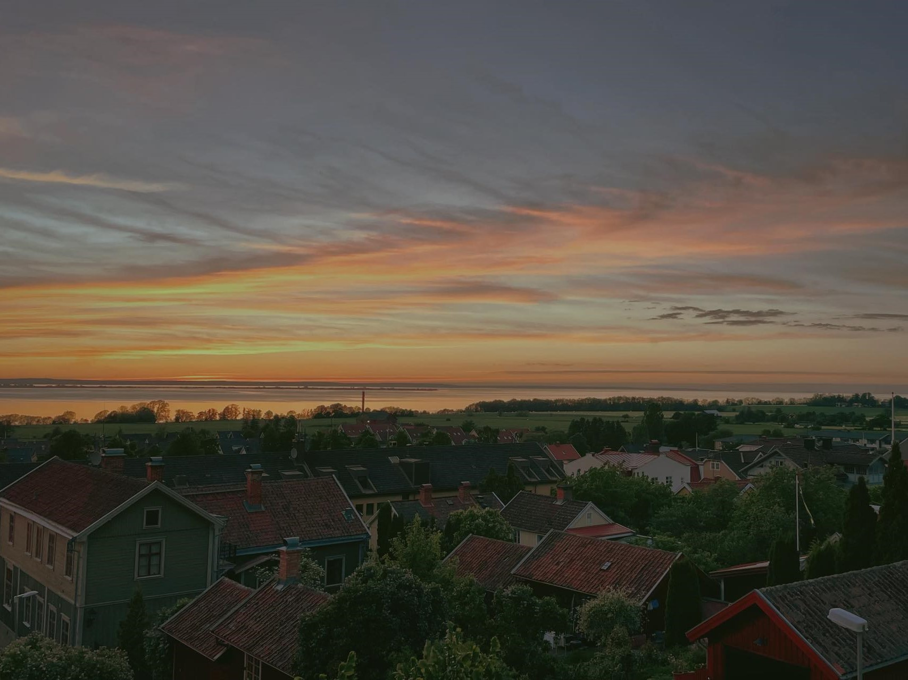

Life in Jönköping
I have been living in Jönköping since last year. Although it is not a large city,
it has many beautiful landscapes. For example in Gränna which is a town in Jönköping.
You get a beautiful view of the lake and there's an island in the middle of it which
I often go hiking on. Also, during the year, I tasted a lot of local Swedish food
e.g. cinnamon buns, and herring.
it has many beautiful landscapes. For example in Gränna which is a town in Jönköping.
You get a beautiful view of the lake and there's an island in the middle of it which
I often go hiking on. Also, during the year, I tasted a lot of local Swedish food
e.g. cinnamon buns, and herring.
Here are some of the photos taken
